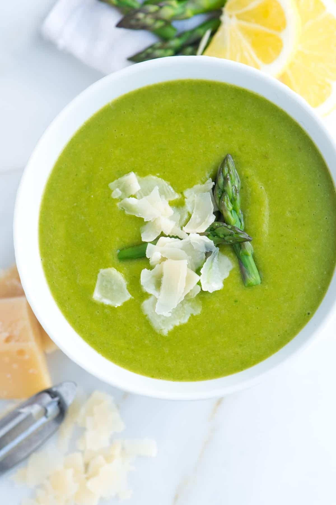

Odin's Asparagus Soup Recipe

Description
This asparagus soup is a creamy and flavorful dish that is perfect for any season. The fresh asparagus is blended with cream and spices to create a smooth and delicious soup.
Ingredients:
- 2 pounds asparagus
- 1 large leek
- 1 medium carrot
- 2 garlic cloves, gently smashed
- 1 bay leaf
- 2 tablespoons extra-virgin olive oil
- 2 medium russet potatoes, peeled and diced, about 1 pound
- 3 cups baby spinach
- Half of a lemon, cut into wedges
- Salt and fresh ground black pepper
- Parmesan cheese, ricotta, or mascarpone for garnish, optional
Steps:
MAKE ASPARAGUS BROTH:
- Trim the dry, woody bottoms of the asparagus. To find where to trim, bend the stalks until they naturally snap. Cut or snap at that point. Save the tops for the soup and add the stems to a large pot.
- Cut the dark green tops from the leek and rinse them well to remove any grit. Add these to the pot with the asparagus stems. Rinse the leek’s lighter green and white parts and set them aside.
- Add the carrot, smashed garlic clove, bay leaf, 1/2 teaspoon of salt, and 1/4 teaspoon of pepper to the pot.
- Cover with 9 cups of water and bring to a boil. Reduce the heat, cover, and simmer for 25 minutes. Season to taste with salt, adding a little at a time until you can taste the broth’s flavors without it being overly salty. Strain the broth and reserve the garlic cloves.
MAKE ASPARAGUS SOUP:
- Thinly slice the reserved white and light green parts of the leek.
- Heat the olive oil in a large soup pot or Dutch oven over medium heat.
- Add the sliced leeks and 1/4 teaspoon of salt. Cook, stirring often, until softened and fragrant, about 5 minutes.
- Stir in the reserved garlic cloves and cook for one more minute. Add the potatoes and 6 cups of the asparagus broth (save the rest for thinning later). Bring to a boil, then reduce heat and simmer, covered, until the potatoes are very tender, about 20 minutes.
- Meanwhile, cut the tips from 12 asparagus spears measuring about 1 ½ inches from the top. Set these aside for garnish. Roughly chop the remaining asparagus.
- Once the potatoes are tender, stir in the chopped asparagus (not the reserved tips) and simmer until tender-crisp and bright green.
- Remove from the heat and stir in the spinach until wilted but still bright green, about 1 minute. Blend the soup until smooth using an immersion blender (or a regular blender in batches).
- Taste and season with more salt and pepper as needed. If the soup is too thick, thin it with the reserved asparagus broth, 1/4 cup at a time.
- Just before serving, cook the reserved asparagus tips in boiling salted water until tender-crisp and bright green (about 3 minutes). Rinse with cold water to stop the cooking.
- Ladle the soup into bowls and garnish with the asparagus tips and cheese (optional). Serve with a lemon wedge for squeezing over the top.
Odin's Other Recipes:
Back to Home